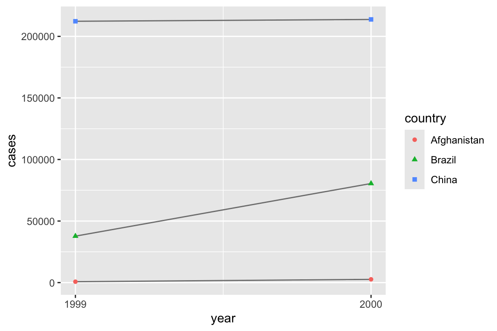
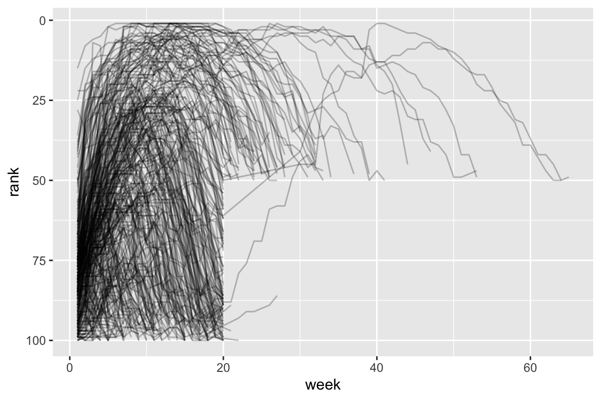
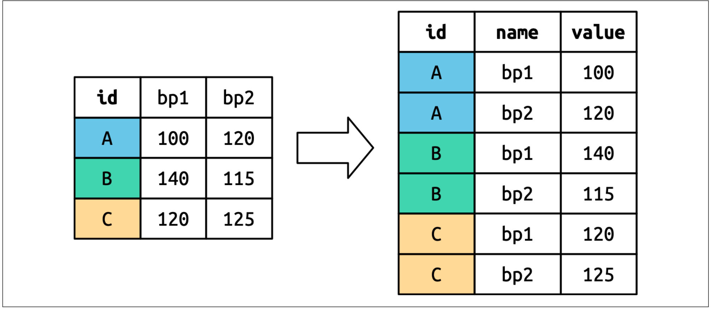
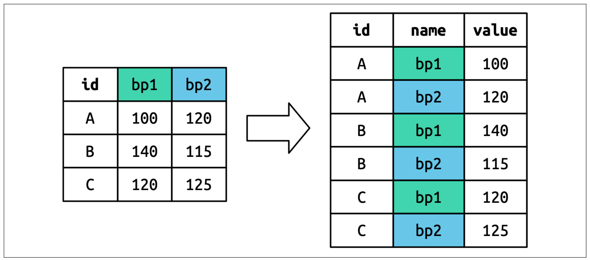
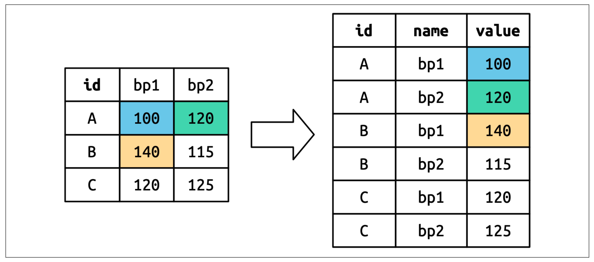
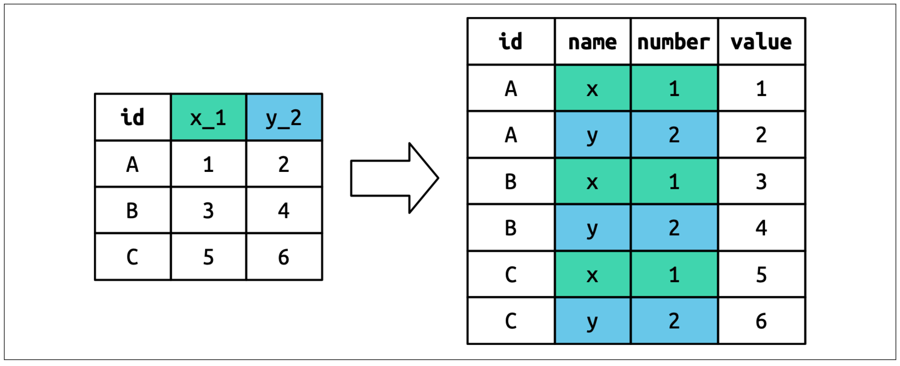
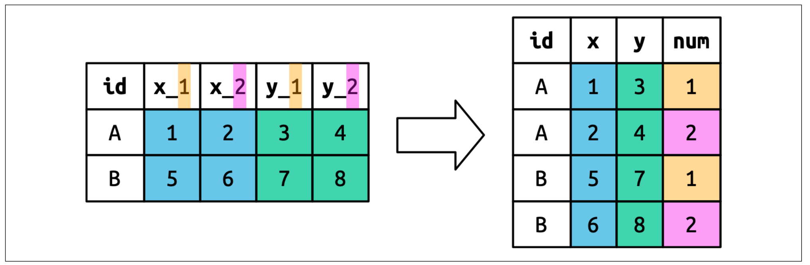

Universidad de Córdoba, Montería
13/04/2026
Todos los conjuntos de datos ordenados son iguales, pero cada conjunto de datos desordenado es desordenado a su manera.
Aprenderá una forma consistente de organizar datos en R utilizando un sistema llamado tidy data.
Poner los datos en este formato requiere algo de trabajo al principio, pero ese trabajo dará sus frutos a largo plazo.
Una vez que tenga datos organizados y las herramientas proporcionadas por los paquetes en tidyverse, dedicará mucho menos tiempo pasando los datos de una representación a otra, lo que le permitirá dedicar más tiempo a las preguntas que le interesan sobre los datos.
Aprenderemos la definición de tidy data y la aplicaremos a un conjunto de datos de juguete simple.
Estudiaremos la herramienta principal que utilizarás para organizar los datos: pivoting.
El pivoting permite cambiar la forma de los datos sin cambiar ninguno de los valores.
tidy data)Se pueden representar los mismos datos de varias maneras.
El siguiente ejemplo muestra los mismos datos organizados de tres maneras diferentes.
Cada conjunto de datos muestra los mismos valores de cuatro variables: país (country), año (year), población (population) y número de casos (cases), documentados de tuberculosis (TB),
Pero cada conjunto de datos organiza (estructura) los valores de manera diferente.
# A tibble: 6 × 4
country year cases population
<chr> <dbl> <dbl> <dbl>
1 Afghanistan 1999 745 19987071
2 Afghanistan 2000 2666 20595360
3 Brazil 1999 37737 172006362
4 Brazil 2000 80488 174504898
5 China 1999 212258 1272915272
6 China 2000 213766 1280428583# A tibble: 12 × 4
country year type count
<chr> <dbl> <chr> <dbl>
1 Afghanistan 1999 cases 745
2 Afghanistan 1999 population 19987071
3 Afghanistan 2000 cases 2666
4 Afghanistan 2000 population 20595360
5 Brazil 1999 cases 37737
6 Brazil 1999 population 172006362
7 Brazil 2000 cases 80488
8 Brazil 2000 population 174504898
9 China 1999 cases 212258
10 China 1999 population 1272915272
11 China 2000 cases 213766
12 China 2000 population 1280428583# A tibble: 6 × 3
country year rate
<chr> <dbl> <chr>
1 Afghanistan 1999 745/19987071
2 Afghanistan 2000 2666/20595360
3 Brazil 1999 37737/172006362
4 Brazil 2000 80488/174504898
5 China 1999 212258/1272915272
6 China 2000 213766/1280428583tidyverse porque es tidy (organizada).tidy (organizado, estructurado)Hay tres reglas interrelacionadas que hacen que un conjunto de datos esté organizado (estructurado):
tidy¿Por qué asegurarse de que sus datos estén organizados? Hay dos ventajas principales:
tidyHay una ventaja específica en colocar variables en columnas porque permite que la naturaleza vectorizada de R brille. Como vimos con mutate() y summarize(), la mayoría de las funciones integradas de R trabajan con vectores de valores. Esto hace que la transformación de datos organizados resulte especialmente natural.
dplyr, ggplot2 y todos los demás paquetes de tidyverse están diseñados para trabajar con tidy data (datos estucturados).
A continuación se muestran algunos ejemplos de cómo trabajar con la tabla 1:
# A tibble: 6 × 5
country year cases population rate
<chr> <dbl> <dbl> <dbl> <dbl>
1 Afghanistan 1999 745 19987071 0.373
2 Afghanistan 2000 2666 20595360 1.29
3 Brazil 1999 37737 172006362 2.19
4 Brazil 2000 80488 174504898 4.61
5 China 1999 212258 1272915272 1.67
6 China 2000 213766 1280428583 1.67 # A tibble: 2 × 2
year total_cases
<dbl> <dbl>
1 1999 250740
2 2000 296920
Para cada una de las tablas anteriores, describa qué representa cada observación y cada columna.
Describe el proceso que usarías para calcular la tasa de las tablas 2 y 3. Deberás realizar cuatro operaciones:
pivot_longer)Los principios de los datos estructurados pueden parecer tan obvios que uno se pregunta si alguna vez encontrará un conjunto de datos que no lo esté.
Nota
Sin embargo, lamentablemente, la mayoría de los datos reales son no estructurados.
Hay dos razones principales:
Los datos suelen organizarse para facilitar algún objetivo distinto al análisis. Por ejemplo, es común estructurarlos para facilitar la entrada de datos, no el análisis.
La mayoría de las personas no están familiarizadas con los principios de los datos organizados, y es difícil obtenerlos uno mismo a menos que se dedique mucho tiempo a trabajar con ellos.
Esto significa que la mayoría de los análisis reales requieren al menos un poco de ordenamiento.
Comenzarás por determinar cuáles son las variables y observaciones subyacentes.
A veces es fácil; otras veces, tendrás que consultar con quienes generaron los datos originalmente.
A continuación, organizaremos datos para obtener un formato organizado, con las variables en las columnas y las observaciones en las filas.
tidyr ofrece dos funciones para pivotar datos: pivot_longer() y pivot_wider().
Empezaremos con pivot_longer(), ya que es el caso más común
Usaremos el data billboard que registra el ranking Billboard de las canciones en el año 2000:
# A tibble: 317 × 79
artist track date.entered wk1 wk2 wk3 wk4 wk5 wk6 wk7 wk8
<chr> <chr> <date> <dbl> <dbl> <dbl> <dbl> <dbl> <dbl> <dbl> <dbl>
1 2 Pac Baby… 2000-02-26 87 82 72 77 87 94 99 NA
2 2Ge+her The … 2000-09-02 91 87 92 NA NA NA NA NA
3 3 Doors D… Kryp… 2000-04-08 81 70 68 67 66 57 54 53
4 3 Doors D… Loser 2000-10-21 76 76 72 69 67 65 55 59
5 504 Boyz Wobb… 2000-04-15 57 34 25 17 17 31 36 49
6 98^0 Give… 2000-08-19 51 39 34 26 26 19 2 2
7 A*Teens Danc… 2000-07-08 97 97 96 95 100 NA NA NA
8 Aaliyah I Do… 2000-01-29 84 62 51 41 38 35 35 38
9 Aaliyah Try … 2000-03-18 59 53 38 28 21 18 16 14
10 Adams, Yo… Open… 2000-08-26 76 76 74 69 68 67 61 58
# ℹ 307 more rows
# ℹ 68 more variables: wk9 <dbl>, wk10 <dbl>, wk11 <dbl>, wk12 <dbl>,
# wk13 <dbl>, wk14 <dbl>, wk15 <dbl>, wk16 <dbl>, wk17 <dbl>, wk18 <dbl>,
# wk19 <dbl>, wk20 <dbl>, wk21 <dbl>, wk22 <dbl>, wk23 <dbl>, wk24 <dbl>,
# wk25 <dbl>, wk26 <dbl>, wk27 <dbl>, wk28 <dbl>, wk29 <dbl>, wk30 <dbl>,
# wk31 <dbl>, wk32 <dbl>, wk33 <dbl>, wk34 <dbl>, wk35 <dbl>, wk36 <dbl>,
# wk37 <dbl>, wk38 <dbl>, wk39 <dbl>, wk40 <dbl>, wk41 <dbl>, wk42 <dbl>, …billboardEn este conjunto de datos, cada observación corresponde a una canción.
Las tres primeras columnas (artista, canción y fecha de entrada) son variables que describen la canción.
A continuación, tenemos 76 columnas, wk1 a wk76, (semanas 1 a 76) que describen la posición de la canción en cada semana.
Aquí, los nombres de las columnas representan una variable (la semana) y los valores de las celdas representan otra variable (la posición).
billboard, pivot_longer()pivot_longer()# A tibble: 24,092 × 5
artist track date.entered week rank
<chr> <chr> <date> <chr> <dbl>
1 2 Pac Baby Don't Cry (Keep... 2000-02-26 wk1 87
2 2 Pac Baby Don't Cry (Keep... 2000-02-26 wk2 82
3 2 Pac Baby Don't Cry (Keep... 2000-02-26 wk3 72
4 2 Pac Baby Don't Cry (Keep... 2000-02-26 wk4 77
5 2 Pac Baby Don't Cry (Keep... 2000-02-26 wk5 87
6 2 Pac Baby Don't Cry (Keep... 2000-02-26 wk6 94
7 2 Pac Baby Don't Cry (Keep... 2000-02-26 wk7 99
8 2 Pac Baby Don't Cry (Keep... 2000-02-26 wk8 NA
9 2 Pac Baby Don't Cry (Keep... 2000-02-26 wk9 NA
10 2 Pac Baby Don't Cry (Keep... 2000-02-26 wk10 NA
# ℹ 24,082 more rows# A tibble: 24,092 × 5
artist track date.entered week rank
<chr> <chr> <date> <chr> <dbl>
1 2 Pac Baby Don't Cry (Keep... 2000-02-26 wk1 87
2 2 Pac Baby Don't Cry (Keep... 2000-02-26 wk2 82
3 2 Pac Baby Don't Cry (Keep... 2000-02-26 wk3 72
4 2 Pac Baby Don't Cry (Keep... 2000-02-26 wk4 77
5 2 Pac Baby Don't Cry (Keep... 2000-02-26 wk5 87
6 2 Pac Baby Don't Cry (Keep... 2000-02-26 wk6 94
7 2 Pac Baby Don't Cry (Keep... 2000-02-26 wk7 99
8 2 Pac Baby Don't Cry (Keep... 2000-02-26 wk8 NA
9 2 Pac Baby Don't Cry (Keep... 2000-02-26 wk9 NA
10 2 Pac Baby Don't Cry (Keep... 2000-02-26 wk10 NA
# ℹ 24,082 more rowsDespués de los datos, hay tres argumentos clave:
Especifica qué columnas deben pivotarse (es decir, qué columnas no son variables).
select(), por lo que aquí podríamos usar !c(artist, track, date.entered) o starts_with("wk")names_to: especifica el nombre de la columna donde se guardarán los nombres de las semanas
values_to: especifica el nombre de la columna donde se guardarán los valores de las celdas
week y rank están entre comillas porque son variables nuevas que estamos creando; aún no existen en los datos cuando ejecutamos la llamada pivot_longer().# A tibble: 24,092 × 5
artist track date.entered week rank
<chr> <chr> <date> <chr> <dbl>
1 2 Pac Baby Don't Cry (Keep... 2000-02-26 wk1 87
2 2 Pac Baby Don't Cry (Keep... 2000-02-26 wk2 82
3 2 Pac Baby Don't Cry (Keep... 2000-02-26 wk3 72
4 2 Pac Baby Don't Cry (Keep... 2000-02-26 wk4 77
5 2 Pac Baby Don't Cry (Keep... 2000-02-26 wk5 87
6 2 Pac Baby Don't Cry (Keep... 2000-02-26 wk6 94
7 2 Pac Baby Don't Cry (Keep... 2000-02-26 wk7 99
8 2 Pac Baby Don't Cry (Keep... 2000-02-26 wk8 NA
9 2 Pac Baby Don't Cry (Keep... 2000-02-26 wk9 NA
10 2 Pac Baby Don't Cry (Keep... 2000-02-26 wk10 NA
# ℹ 24,082 more rowsAhora, centrémonos en el marco de datos resultante.
¿Qué ocurre si una canción permanece en el top 100 durante menos de 76 semanas?
Ejemplo: “Baby Don’t Cry” de 2 Pac. El resultado anterior sugiere que solo estuvo entre las 100 primeras durante 7 semanas
Las semanas restantes se completan con valores faltantes.
Estos NA en realidad no representan observaciones flatantes; la estructura del conjunto de datos las obligó a existir
values_drop_na= TRUEpivot_longer() que se deshaga de ellas con la opción values_drop_na= TRUE# A tibble: 5,307 × 5
artist track date.entered week rank
<chr> <chr> <date> <chr> <dbl>
1 2 Pac Baby Don't Cry (Keep... 2000-02-26 wk1 87
2 2 Pac Baby Don't Cry (Keep... 2000-02-26 wk2 82
3 2 Pac Baby Don't Cry (Keep... 2000-02-26 wk3 72
4 2 Pac Baby Don't Cry (Keep... 2000-02-26 wk4 77
5 2 Pac Baby Don't Cry (Keep... 2000-02-26 wk5 87
6 2 Pac Baby Don't Cry (Keep... 2000-02-26 wk6 94
7 2 Pac Baby Don't Cry (Keep... 2000-02-26 wk7 99
8 2Ge+her The Hardest Part Of ... 2000-09-02 wk1 91
9 2Ge+her The Hardest Part Of ... 2000-09-02 wk2 87
10 2Ge+her The Hardest Part Of ... 2000-09-02 wk3 92
# ℹ 5,297 more rowsweek a numéricaEstos datos ahora están estructurados (son tidy),
Podríamos hacer que los cálculos futuros sean un poco más fáciles convirtiendo los valores de la semana de cadenas de caracteres a números.
usando mutate() y parse_number()
parse_number() extrae el primer número de una cadena, ignorando todo el resto del texto.parse_number()# A tibble: 5,307 × 5
artist track date.entered week rank
<chr> <chr> <date> <dbl> <dbl>
1 2 Pac Baby Don't Cry (Keep... 2000-02-26 1 87
2 2 Pac Baby Don't Cry (Keep... 2000-02-26 2 82
3 2 Pac Baby Don't Cry (Keep... 2000-02-26 3 72
4 2 Pac Baby Don't Cry (Keep... 2000-02-26 4 77
5 2 Pac Baby Don't Cry (Keep... 2000-02-26 5 87
6 2 Pac Baby Don't Cry (Keep... 2000-02-26 6 94
7 2 Pac Baby Don't Cry (Keep... 2000-02-26 7 99
8 2Ge+her The Hardest Part Of ... 2000-09-02 1 91
9 2Ge+her The Hardest Part Of ... 2000-09-02 2 87
10 2Ge+her The Hardest Part Of ... 2000-09-02 3 92
# ℹ 5,297 more rowsUse pivot_longer() para llevar los datos de la tabla1 a la forma de la tabla2
Con los datos de acuicultura
PISCINA dia OXIGESUP OXIGEFON TEMPSUP TEMPFON SALINSUP SALINFON TRANSP NIVEL
1 2 1 5.20 4.80 29.67 29.00 7.67 7.67 0.38 -73.67
2 2 2 4.47 4.13 29.67 29.00 8.00 8.00 0.33 -11.33
3 2 3 4.53 4.20 30.00 29.00 9.00 9.00 0.34 -4.33
4 2 4 5.07 4.53 29.67 28.67 10.00 10.00 0.25 -6.00
5 2 5 4.13 3.87 29.00 28.00 12.00 12.00 0.23 -9.00
6 2 6 4.40 3.87 28.67 27.67 14.00 14.00 0.28 -9.67pivot_longer()OXIGESUP OXIGEFON queden en una sola columna como se muestra a continuación. # A tibble: 304 × 4
PISCINA dia Sitio Oxigeno
<int> <int> <chr> <dbl>
1 2 1 OXIGESUP 5.2
2 2 1 OXIGEFON 4.8
3 2 2 OXIGESUP 4.47
4 2 2 OXIGEFON 4.13
5 2 3 OXIGESUP 4.53
6 2 3 OXIGEFON 4.2
7 2 4 OXIGESUP 5.07
8 2 4 OXIGEFON 4.53
9 2 5 OXIGESUP 4.13
10 2 5 OXIGEFON 3.87
# ℹ 294 more rows
Podemos observar que muy pocas canciones permanecen en el top 100 durante más de 20 semanas.
Ahora que hemos visto cómo usar la pivotación para reorganizar los datos, dediquemos un tiempo a comprender mejor su efecto.
Usaremos un conjunto de datos simple para que sea más fácil ver qué sucede.
Supongamos que tenemos tres pacientes con identificadores A, B y C, y tomamos dos medidas de presión arterial a cada uno.
Crearemos el data con tribble(), una función práctica para construir pequeños tibbles manualmente.
dfid (ya existente),medición (los nombres de las columnas) yvalor (los valores de las celdas).df para ponerlo en formato “largo”df
names_to. Deben repetirse una vez para cada fila del conjunto de datos original.
values_to. Ellas se desenrollan fila por fila.
Una situación más compleja se presenta cuando se tienen múltiples datos agrupados en los nombres de las columnas y se desea almacenarlos en nuevas variables independientes.
Por ejemplo, tomemos el conjunto de datos who2, la fuente de las tablas 1 2 y 3 anteriores.
# A tibble: 7,240 × 58
country year sp_m_014 sp_m_1524 sp_m_2534 sp_m_3544 sp_m_4554 sp_m_5564
<chr> <dbl> <dbl> <dbl> <dbl> <dbl> <dbl> <dbl>
1 Afghanistan 1980 NA NA NA NA NA NA
2 Afghanistan 1981 NA NA NA NA NA NA
3 Afghanistan 1982 NA NA NA NA NA NA
4 Afghanistan 1983 NA NA NA NA NA NA
5 Afghanistan 1984 NA NA NA NA NA NA
6 Afghanistan 1985 NA NA NA NA NA NA
7 Afghanistan 1986 NA NA NA NA NA NA
8 Afghanistan 1987 NA NA NA NA NA NA
9 Afghanistan 1988 NA NA NA NA NA NA
10 Afghanistan 1989 NA NA NA NA NA NA
# ℹ 7,230 more rows
# ℹ 50 more variables: sp_m_65 <dbl>, sp_f_014 <dbl>, sp_f_1524 <dbl>,
# sp_f_2534 <dbl>, sp_f_3544 <dbl>, sp_f_4554 <dbl>, sp_f_5564 <dbl>,
# sp_f_65 <dbl>, sn_m_014 <dbl>, sn_m_1524 <dbl>, sn_m_2534 <dbl>,
# sn_m_3544 <dbl>, sn_m_4554 <dbl>, sn_m_5564 <dbl>, sn_m_65 <dbl>,
# sn_f_014 <dbl>, sn_f_1524 <dbl>, sn_f_2534 <dbl>, sn_f_3544 <dbl>,
# sn_f_4554 <dbl>, sn_f_5564 <dbl>, sn_f_65 <dbl>, ep_m_014 <dbl>, …Este conjunto de datos, recopilado por la Organización Mundial de la Salud, registra información sobre los diagnósticos de tuberculosis.
Hay dos columnas que ya son variables y son fáciles de interpretar: country y year.
Les siguen 56 columnas como sp_m_014, ep_m_4554 y rel_m_3544.
Si miras estas columnas cuidadosamente, notarás que hay un patrón.
El nombre de cada columna se compone de tres partes separadas por _.
sp/rel/ep, describe el método utilizado para el diagnóstico;m/f, es el géneroTenemos seis datos registrados en who2:
Para organizar estos seis datos en seis columnas separadas, usamos pivot_longer() con un vector de nombres de columna para names_to
Instrucciones para dividir los nombres de las variables originales en fragmentos para names_sep,
Así como un nombre de columna para values_to
# A tibble: 405,440 × 6
country year diagnosis gender age count
<chr> <dbl> <chr> <chr> <chr> <dbl>
1 Afghanistan 1980 sp m 014 NA
2 Afghanistan 1980 sp m 1524 NA
3 Afghanistan 1980 sp m 2534 NA
4 Afghanistan 1980 sp m 3544 NA
5 Afghanistan 1980 sp m 4554 NA
6 Afghanistan 1980 sp m 5564 NA
7 Afghanistan 1980 sp m 65 NA
8 Afghanistan 1980 sp f 014 NA
9 Afghanistan 1980 sp f 1524 NA
10 Afghanistan 1980 sp f 2534 NA
# ℹ 405,430 more rowsAhora, en lugar de pivotar los nombres de las columnas en una sola, pivotan en varias. Puedes imaginar que esto sucede en dos pasos: primero pivotando y luego separando.

El siguiente nivel de complejidad se da cuando los nombres de las columnas incluyen una combinación de valores y nombres de variables. Por ejemplo, tomemos el conjunto de datos household
householdEste conjunto de datos contiene datos sobre cinco familias, con los nombres y fechas de nacimiento de hasta dos hijos.
El reto radica en que los nombres de las columnas contienen los nombres de dos variables (fecha de nacimiento, nombre) y los valores de otra (hijo, con valores 1 o 2).
Para solucionar este problema, necesitamos proporcionar un vector a names_to, pero esta vez usamos el centinela especial “.value”;
Este no es el nombre de una variable, sino un valor único que indica a pivot_longer() que realice una acción diferente.
Esto anula el argumento habitual values_to para usar el primer componente del nombre de la columna pivotada como nombre de variable en la salida.
# A tibble: 9 × 4
family child dob name
<int> <chr> <date> <chr>
1 1 child1 1998-11-26 Susan
2 1 child2 2000-01-29 Jose
3 2 child1 1996-06-22 Mark
4 3 child1 2002-07-11 Sam
5 3 child2 2004-04-05 Seth
6 4 child1 2004-10-10 Craig
7 4 child2 2009-08-27 Khai
8 5 child1 2000-12-05 Parker
9 5 child2 2005-02-28 Gracie
pivot_wider()pivot_wider()A continuación, usaremos pivot_wider(), que amplía los conjuntos de datos aumentando las columnas y reduciendo las filas, y resulta útil cuando una observación se distribuye en varias filas.
Esto parece ser menos común en la práctica, pero sí se presenta con frecuencia al trabajar con datos gubernamentales.
pivot_wider()pivot_wider(), para regresar los datos de oxigeno disuelto en la superficie y fondo a su estructura original, es decir, de# A tibble: 3 × 4
PISCINA dia Sitio Oxigeno
<int> <int> <chr> <dbl>
1 2 1 OXIGESUP 5.2
2 2 1 OXIGEFON 4.8
3 2 2 OXIGESUP 4.47a la forma
PISCINA dia OXIGESUP OXIGEFON
1 2 1 5.20 4.80
2 2 2 4.47 4.13
3 2 3 4.53 4.20
4 2 4 5.07 4.53
5 2 5 4.13 3.87
6 2 6 4.40 3.87
7 2 7 4.20 3.93
8 2 8 3.33 3.13
9 2 9 3.60 3.27
10 2 10 2.67 2.47
11 2 11 3.07 2.87
12 2 12 3.40 3.07
13 2 13 4.53 4.33
14 2 14 4.00 3.80
15 2 15 5.00 4.67
16 2 16 4.33 4.07
17 2 17 3.60 2.93
18 2 18 2.80 2.47
19 2 19 2.33 2.07
20 2 20 13.87 8.20
21 2 21 13.80 9.60
22 2 22 11.87 8.07
23 2 23 10.93 9.13
24 2 24 10.47 8.07
25 2 25 11.93 8.33
26 2 26 7.88 8.33
27 2 27 9.67 7.53
28 2 28 11.40 8.13
29 2 29 12.60 8.13
30 2 30 10.60 7.73
31 2 31 9.80 8.00
32 2 32 11.20 8.47
33 2 33 10.20 7.80
34 2 34 15.53 8.53
35 2 35 10.80 8.00
36 2 36 14.07 11.73
37 2 37 13.00 10.73
38 2 38 13.00 10.07
39 3 1 6.30 5.92
40 3 2 3.37 2.97
41 3 3 5.73 5.23
42 3 4 5.50 5.07
43 3 5 4.03 3.60
44 3 6 3.80 3.40
45 3 7 3.40 3.10
46 3 8 4.03 3.63
47 3 9 4.07 3.70
48 3 10 2.80 2.60
49 3 11 3.54 3.27
50 3 12 2.90 2.70
51 3 13 3.57 3.33
52 3 14 3.47 3.23
53 3 15 3.97 3.73
54 3 16 3.27 3.03
55 3 17 4.53 4.33
56 3 18 3.47 3.23
57 3 19 2.87 2.53
58 3 20 14.87 8.73
59 3 21 10.13 6.90
60 3 22 15.20 9.07
61 3 23 13.83 8.83
62 3 24 11.80 8.07
63 3 25 10.80 7.83
64 3 26 9.90 7.60
65 3 27 12.93 8.77
66 3 28 11.77 8.57
67 3 29 10.60 7.80
68 3 30 11.17 8.03
69 3 31 11.77 8.03
70 3 32 11.13 8.07
71 3 33 11.57 8.27
72 3 34 11.07 8.40
73 3 35 10.65 8.23
74 3 36 10.65 8.67
75 3 37 10.77 8.52
76 3 38 11.20 8.33
77 18 1 6.77 6.07
78 18 2 3.57 3.23
79 18 3 4.67 4.13
80 18 4 3.60 3.17
81 18 5 3.30 2.97
82 18 6 4.87 4.33
83 18 7 4.77 4.40
84 18 8 3.50 3.10
85 18 9 3.33 3.03
86 18 10 2.93 2.57
87 18 11 2.40 1.97
88 18 12 2.50 2.17
89 18 13 2.90 2.43
90 18 14 3.53 3.07
91 18 15 2.40 2.17
92 18 16 3.43 3.13
93 18 17 3.53 3.30
94 18 18 3.77 3.47
95 18 19 3.66 3.38
96 18 20 12.60 9.87
97 18 21 7.90 7.07
98 18 22 8.93 7.90
99 18 23 6.67 5.57
100 18 24 7.07 6.03
101 18 25 10.30 8.67
102 18 26 8.80 7.63
103 18 27 8.20 7.23
104 18 28 8.87 7.47
105 18 29 9.63 8.10
106 18 30 9.70 8.87
107 18 31 10.77 8.93
108 18 32 8.67 7.63
109 18 33 9.57 8.00
110 18 34 8.73 7.53
111 18 35 8.90 7.87
112 18 36 9.57 7.97
113 18 37 9.93 7.57
114 18 38 10.02 8.39
115 20 1 8.00 7.40
116 20 2 5.07 4.67
117 20 3 4.17 3.80
118 20 4 4.50 3.90
119 20 5 3.77 3.43
120 20 6 4.37 4.00
121 20 7 2.43 2.10
122 20 8 3.97 3.54
123 20 9 3.47 3.07
124 20 10 2.77 2.47
125 20 11 3.70 3.30
126 20 12 2.80 2.50
127 20 13 4.33 3.93
128 20 14 5.63 5.07
129 20 15 2.73 2.43
130 20 16 2.93 2.73
131 20 17 3.67 3.43
132 20 18 2.92 2.77
133 20 19 4.07 3.53
134 20 20 14.60 11.87
135 20 21 13.53 11.37
136 20 22 10.83 9.90
137 20 23 10.70 8.97
138 20 24 7.40 6.50
139 20 25 11.70 8.97
140 20 26 8.97 7.03
141 20 27 9.37 8.30
142 20 28 8.83 8.30
143 20 29 7.53 7.17
144 20 30 8.70 7.53
145 20 31 7.77 6.77
146 20 32 9.10 7.57
147 20 33 10.47 8.20
148 20 34 11.40 8.43
149 20 35 9.90 7.28
150 20 36 9.17 7.53
151 20 37 8.40 7.00
152 20 38 9.63 8.34pivot_wider()# A tibble: 152 × 4
PISCINA dia OXIGESUP OXIGEFON
<int> <int> <dbl> <dbl>
1 2 1 5.2 4.8
2 2 2 4.47 4.13
3 2 3 4.53 4.2
4 2 4 5.07 4.53
5 2 5 4.13 3.87
6 2 6 4.4 3.87
7 2 7 4.2 3.93
8 2 8 3.33 3.13
9 2 9 3.6 3.27
10 2 10 2.67 2.47
# ℹ 142 more rowsTransformaremos los datos
# A tibble: 6 × 3
id measurement value
<chr> <chr> <dbl>
1 A bp1 100
2 A bp2 120
3 B bp1 140
4 B bp2 115
5 C bp1 120
6 C bp2 125A su versión original
cms_patient_experience, un conjunto de datos de los Centros de Servicios de Medicare y Medicaid que recopila datos sobre las experiencias de los pacientes:cms_patient_experience data# A tibble: 500 × 5
org_pac_id org_nm measure_cd measure_title prf_rate
<chr> <chr> <chr> <chr> <dbl>
1 0446157747 USC CARE MEDICAL GROUP INC CAHPS_GRP… CAHPS for MI… 63
2 0446157747 USC CARE MEDICAL GROUP INC CAHPS_GRP… CAHPS for MI… 87
3 0446157747 USC CARE MEDICAL GROUP INC CAHPS_GRP… CAHPS for MI… 86
4 0446157747 USC CARE MEDICAL GROUP INC CAHPS_GRP… CAHPS for MI… 57
5 0446157747 USC CARE MEDICAL GROUP INC CAHPS_GRP… CAHPS for MI… 85
6 0446157747 USC CARE MEDICAL GROUP INC CAHPS_GRP… CAHPS for MI… 24
7 0446162697 ASSOCIATION OF UNIVERSITY PHYSI… CAHPS_GRP… CAHPS for MI… 59
8 0446162697 ASSOCIATION OF UNIVERSITY PHYSI… CAHPS_GRP… CAHPS for MI… 85
9 0446162697 ASSOCIATION OF UNIVERSITY PHYSI… CAHPS_GRP… CAHPS for MI… 83
10 0446162697 ASSOCIATION OF UNIVERSITY PHYSI… CAHPS_GRP… CAHPS for MI… 63
# ℹ 490 more rowsLa unidad central estudiada es una organización, pero cada organización se distribuye en seis filas, con una fila por cada medición realizada en la organización de la encuesta. Podemos ver el conjunto completo de valores para measure_cd y measure_title usando distinct():
# A tibble: 6 × 2
measure_cd measure_title
<chr> <chr>
1 CAHPS_GRP_1 CAHPS for MIPS SSM: Getting Timely Care, Appointments, and Infor…
2 CAHPS_GRP_2 CAHPS for MIPS SSM: How Well Providers Communicate
3 CAHPS_GRP_3 CAHPS for MIPS SSM: Patient's Rating of Provider
4 CAHPS_GRP_5 CAHPS for MIPS SSM: Health Promotion and Education
5 CAHPS_GRP_8 CAHPS for MIPS SSM: Courteous and Helpful Office Staff
6 CAHPS_GRP_12 CAHPS for MIPS SSM: Stewardship of Patient Resources Ninguna de estas columnas será un nombre de variable especialmente efectivo: measure_cd no indica el significado de la variable, y measure_title es una oración larga con espacios.
Por ahora, usaremos measure_cd como fuente para los nuevos nombres de columna, pero en un análisis real, podrías crear tus propios nombres de variable, que sean breves y con significado.
pivot_wider() tiene la interfaz opuesta a pivot_longer(): en lugar de elegir nuevos nombres de columnas, necesitamos proporcionar las columnas existentes que definen los valores (values_from) y el nombre de la columna (names_from):
pivot_wider()# A tibble: 500 × 9
org_pac_id org_nm measure_title CAHPS_GRP_1 CAHPS_GRP_2 CAHPS_GRP_3
<chr> <chr> <chr> <dbl> <dbl> <dbl>
1 0446157747 USC CARE MEDICA… CAHPS for MI… 63 NA NA
2 0446157747 USC CARE MEDICA… CAHPS for MI… NA 87 NA
3 0446157747 USC CARE MEDICA… CAHPS for MI… NA NA 86
4 0446157747 USC CARE MEDICA… CAHPS for MI… NA NA NA
5 0446157747 USC CARE MEDICA… CAHPS for MI… NA NA NA
6 0446157747 USC CARE MEDICA… CAHPS for MI… NA NA NA
7 0446162697 ASSOCIATION OF … CAHPS for MI… 59 NA NA
8 0446162697 ASSOCIATION OF … CAHPS for MI… NA 85 NA
9 0446162697 ASSOCIATION OF … CAHPS for MI… NA NA 83
10 0446162697 ASSOCIATION OF … CAHPS for MI… NA NA NA
# ℹ 490 more rows
# ℹ 3 more variables: CAHPS_GRP_5 <dbl>, CAHPS_GRP_8 <dbl>, CAHPS_GRP_12 <dbl>pivot_wider()El resultado no es del todo correcto; parece que aún tenemos varias filas para cada organización.
Esto se debe a que también necesitamos indicar a pivot_wider() qué columna o columnas tienen valores que identifican de forma única cada fila; en este caso, son las variables que empiezan por “org”:
pivot_wider()# A tibble: 95 × 8
org_pac_id org_nm CAHPS_GRP_1 CAHPS_GRP_2 CAHPS_GRP_3 CAHPS_GRP_5 CAHPS_GRP_8
<chr> <chr> <dbl> <dbl> <dbl> <dbl> <dbl>
1 0446157747 USC C… 63 87 86 57 85
2 0446162697 ASSOC… 59 85 83 63 88
3 0547164295 BEAVE… 49 NA 75 44 73
4 0749333730 CAPE … 67 84 85 65 82
5 0840104360 ALLIA… 66 87 87 64 87
6 0840109864 REX H… 73 87 84 67 91
7 0840513552 SCL H… 58 83 76 58 78
8 0941545784 GRITM… 46 86 81 54 NA
9 1052612785 COMMU… 65 84 80 58 87
10 1254237779 OUR L… 61 NA NA 65 NA
# ℹ 85 more rows
# ℹ 1 more variable: CAHPS_GRP_12 <dbl>pivot_wider()Para entender cómo funciona pivot_wider(), usemos un conjunto de datos simple.
En esta ocasión tenemos dos pacientes con ID A y B;
Tenemos tres mediciones de presión arterial en el paciente A y dos en el paciente B:
pivot_wider()pivot_wider()value y los nombres de la columna measurement:# A tibble: 2 × 4
id bp1 bp2 bp3
<chr> <dbl> <dbl> <dbl>
1 A 100 120 105
2 B 140 115 NApivot_wider() primero debe determinar qué irá en las filas y columnas.pivot_wider()measurement:De forma predeterminada, las filas de la salida están determinadas por todas las variables que no entran en los nuevos nombres o valores.
Estos se llaman id_cols. En el ejemplo solo hay una columna, pero en general puede haber cualquier número.
pivot_wider()pivot_wider()pivot_wider() luego combina estos resultados para generar un marco de datos vacío:# A tibble: 2 × 4
id x y z
<chr> <lgl> <lgl> <lgl>
1 A NA NA NA
2 B NA NA NA pivot_wider()Qué sucede si hay varias filas en la entrada que corresponden a una celda en la salida.
El siguiente ejemplo tiene dos filas que corresponden al id A y la medición bp1:
pivot_wider()Si intentamos pivotar este data, obtenemos una salida que contiene columnas de lista. Sobre lo que aprenderemos más adelante.